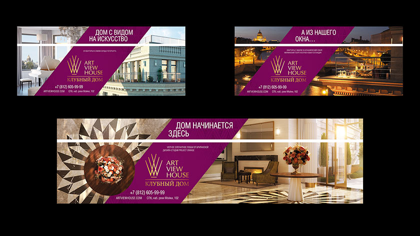

Хотим поделиться проектом по разработке дизайн-концепции оформления стоек в бизнес-терминале Пулково 3.
Перед нами стояла задача: интегрировать предоставленные Заказчиком рендеры с текстом и блоком контактной информации.
Совместно с клиентом было решено продвигать: расположение дома в окружении объектов культуры и искусства, фешенебельное лобби и террасы с видом на Исаакий, Мариинский театр и остров Новая Голландия.
В соседстве с искусством
